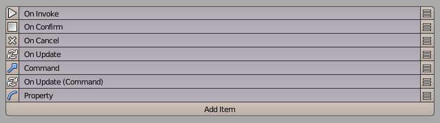
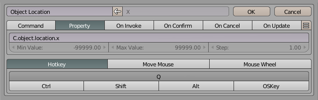

Modal Operator Editor
A Modal Operator is an interactive tool that “locks” Blender into a particular operation until the user decides to confirm or cancel. For example, the built-in Rotate tool (accessed via the R hotkey) is a typical modal operator — while rotating, you can adjust the angle in real-time, and only when you confirm or cancel does Blender return to its normal state.
When using modal operators, you can define sub-hotkeys (or sub-keys) for extra control. For example, you can create hotkeys to toggle options or change parameters with mouse movements.
Tutorial
Editor Overview
Below is an example of the Modal Operator Editor interface in PME:

The editor consists of multiple slots where you can assign commands or property changes for various sub-hotkeys. Here is a closer look at the slot tabs:

Slot Tabs
PME allows you to define how sub-hotkeys behave by creating different slots inside the Modal Operator. These slots can include scripting or property changes that get triggered during the modal session.
Command
Assign a sub-hotkey to run Python code directly or to call an existing operator.
Example: Pressing S while the Modal Operator is active might scale the object via bpy.ops.transform.resize(‘INVOKE_DEFAULT’).
Property
Assign a sub-hotkey (or mouse interaction) to change a property’s value on the fly. This is especially useful for real-time adjustments within the modal operator.
Hotkey Modes:
Hotkey Press and hold the sub-hotkey, then move the mouse to change a property value.
Mouse Move Move the mouse to change the property value. This blocks all other sub-hotkeys, so typically you’d use it together with Confirm on Release so the operation finalizes when you release the mouse.
Mouse Wheel Scroll the mouse wheel to increment or decrement the property value.
On Invoke
Python code executed right when the Modal Operator is invoked (i.e., when the user first activates it).
Example: Initialize variables, store the starting position or angle, or set up a custom overlay.
On Confirm
Python code executed upon user confirmation (e.g., pressing Enter or releasing the initial hotkey under certain conditions).
On Cancel
Python code executed if the user cancels the operation (e.g., pressing Esc or right-clicking to abort).
On Update
Python code that runs whenever any of the sub-hotkeys is pressed. This is handy for real-time feedback as the user interacts.
Assigning On Update to a specific sub-hotkey: Place the “On Update” slot after that specific sub-hotkey slot.
Assigning On Update to all sub-hotkeys: Place it before all sub-hotkey slots (before any “Command” or “Property” slots).
Scripting
PME provides two special functions to end a modal operator:
- confirm()
Confirms the modal operator.
- Returns:
True
- cancel()
Cancels the modal operator.
- Returns:
True
By calling confirm() or cancel() in your Python code, you decide when the modal operator stops and whether its effects are applied or discarded.
Settings

Confirm on Release
If enabled, the modal operator automatically confirms when the user releases the initial hotkey used to invoke it. This is common in quick operations where you might hold down a key to make adjustments and let go to finalize them.
How it works: - Press and hold the hotkey (e.g., R for rotate). - Drag the mouse to adjust the rotation (or any property). - Release the hotkey to confirm immediately, without needing an extra Enter keystroke.